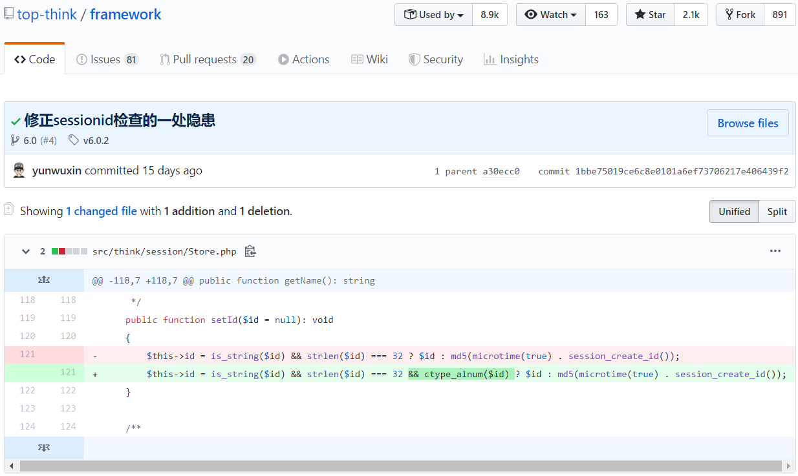
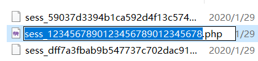

这个洞出来也有一段时间了，看了创宇的paper后觉得蛮简单的，决定自己在本地搭建复现一下，记录一下学习的过程。
环境准备
apache + thinphp(<=6.0.0版本<=6.0.2) + php7以上
- ThinkPHP6起只能使用composer来安装，安装composer、php、apache的过程我就不赘述了。
执行命令:composer create-project topthink/think tp 6.0.0，其中tp是你的文件夹命名，6.0.0是版本号，6.0.1也可。
这里说一个问题，我这个时间Thinkphp的最新版是6.0.2，用上面的命令下载下来framework是6.0.2版本的，我们需要再执行一条命令：composer require topthink/framework:6.0.0：此时就会把将6.0.0的版本把6.0.2给替换掉 - 进入tp的安装目录，执行
php think run，它会开启一个临时的开发环境的服务器，默认运行在localhost:8000，打开浏览器访问显示正常即可漏洞复现在apache下进行
漏洞分析
漏洞影响的版本：top-think/framework 6.x < 6.0.2
- 官方信息
ThinkPHP发布的补丁声称修复了一处由于不安全的SessionId导致的任意文件操作漏洞：在开启Session的情况下可以导致创建任意文件以及删除任意文件，特定情况下可以getshell - 根据这些信息，我们到官方GitHub的commit页面找一下相关的提交记录：

可以看到位于src/think/session/Store.php中212行在设置id时增加了一个函数：ctype_alnum($text)。
查一下PHP官方手册，这个函数是用来检测输入的$text中所有的字符全部是字母和(或者)数字，返回 TRUE 否则返回FALSE
根据文件目录和更改的函数部分猜测：可能是存储Session时导致的文件写入；然后跟进找一下相关的函数，可以看到vendor/topthink/framework/src/think/session/Store.php:254的save()函数，265行还可以对文件进行删除操作，并且对后端业务逻辑依赖较低
可以看到设置了$sessionId，并且调用了一个write函数，继续跟进，找到write()函数vendor/topthink/framework/src/think/session/driver/File.php:210
继续跟进，找到writeFile()函数
可以看到调用了file_put_contents()函数，这里是真正写入文件的操作了
- 接下来我们反向分析一下，看看能不能找到可控点
- 函数
file_put_contents($path,$content,LOCK_EX)中参数$path,$content来源于函数writeFile($path,$data) - 函数
writeFile($path,$data)中参数$path,$data来源于函数write(String $sessionID,String $sessiData) - 函数
write(String $sessionID,String $sessiData)中参数$sessionID,$sessiData来源于save()中调用了write()，同时传入的参数$sessionId的值是调用getId()传入的
综上：文件名来源于$sessionId
当传入的id值长度为32并且……etc时，创建
sessionId，然后进行gitId()接下来找调用
setId()的地方vendor/topthink/framework/src/think/middleware/SessionInit.php:46
其中cookieName的值为PHPSESSID，而$sessionId是cookie中名为PHPSESSID的值，因此是攻击者可控的，从而导致写入的文件名可控。
但是默认环境下，session的内容由vendor/topthink/framework/src/think/session/Store.php:261的变量$data传入：1
$data = $this->serialize($this->data);
$data在默认环境中为空：1
2
3
4
5/**
* Session数据
* @var array
*/
protected $data = [];写入的
session内容是由实际的后端业务逻辑来决定的，所以说只有苛刻的条件下才能写入webshell。并且一开始就说了需要在环境开启session的情况下才可以实现任意文件操作(默认环境不开启session)我们在
app\controller\index.php中增加一些代码后，如下：1
2
3
4
5
6
7
8
9
10
11
12
13
14
15
16
17
18
19
20
21
namespace app\controller;
use think\facade\Session;
use app\BaseController;
class Index extends BaseController
{
public function index()
{
Session::set('name','thinkphp');
return 1;
return '<style type="text/css">*{ padding: 0; margin: 0; } div{ padding: 4px 48px;} a{color:#2E5CD5;cursor: pointer;text-decoration: none} a:hover{text-decoration:underline; } body{ background: #fff; font-family: "Century Gothic","Microsoft yahei"; color: #333;font-size:18px;} h1{ font-size: 100px; font-weight: normal; margin-bottom: 12px; } p{ line-height: 1.6em; font-size: 42px }</style><div style="padding: 24px 48px;"> <h1>:) </h1><p> ThinkPHP V6<br/><span style="font-size:30px">13载初心不改 - 你值得信赖的PHP框架</span></p></div><script type="text/javascript" src="https://tajs.qq.com/stats?sId=64890268" charset="UTF-8"></script><script type="text/javascript" src="https://e.topthink.com/Public/static/client.js"></script><think id="eab4b9f840753f8e7"></think>';
}
public function hello($name = 'ThinkPHP6')
{
return 'hello,' . $name;
}
}
忘了说了thinkphp6开启session的方法：删除
/app/middleware.php最后一行的注释
本地环境复现
很简单，只需要构造PHPSESSID的值即可，值为string&&长度为32
此时查看一下生成的session，生成的session文件保存在\runtime\session下

session里的内容:
1 | a:1:{s:4:"name";s:8:"thinkphp";} |
可以看到session的内容经过了序列化操作，只要将session的内容反序列化即可getshell
- 如果要getshell的话，后端需要有类似的
Session::Set('name',$_POST['i'])代码才可以利用
总结：
在复现的过程，也遇到了不少问题：首先ThinkPHP6开始不支持git了，只能通过composer来操作，由于从来没用过它也没经验，一开始安装环境一直下载不到旧版本，后来得到师傅的帮助终于下好了ThinkPHP6.0.0的环境，在这里感谢一下师傅@P1an0对我的帮助。
这个漏洞其实很简单，就是用户可控变量导致的，也没有对一些数据的过滤等等。需要一定条件才可以利用，也就是开启session；写webshell还要看具体的后端业务逻辑等等。我觉得就这个框架来看其实可以更深入的进行挖掘，希望有大佬可以和我一起探讨学习
参考的paper：ThinkPHP6 任意文件操作漏洞分析